Learning outcomes
By the end of Chapter 8 you should be able to do each of these. The tag shows where it is covered.
- 8.1Explain the big-bang theory and the origin of the elements.
- 8.2Explain the solar system's origin and the consequences for Earth.
- 8.3Describe the turbulent beginning of Earth during the Hadean and Archean Eons.
- 8.5Identify the transition to a modern atmosphere, plate tectonics, and evolution that occurred in the Proterozoic Eon.
- 8.6Describe the Paleozoic evolution and extinction of invertebrates with hard parts, fish, amphibians, reptiles, tetrapods, and land plants, and the tectonics and sedimentation of the supercontinent Pangea.
- 8.7Describe the Mesozoic evolution and extinction of birds, dinosaurs, and mammals, and the tectonics and sedimentation of Pangea's breakup.
- 8.8Describe the Cenozoic evolution of mammals and birds, paleoclimate, and the tectonics that shaped the modern world.
How to use this guide
Underlined words are key terms. Click one, or open Key terms at the bottom right, to read and search every definition from this chapter. Earth history draws on four fields: paleogeography (past landscapes), paleontology (past organisms), paleoecology (past ecosystems), and paleoclimatology (past environments). The chapter starts with the origin of the universe and then walks through Earth's 4.6-billion-year history, eon by eon and era by era. In this guide, Ga means billion years ago and Ma means million years ago.
- Oldest dated minerals, 4.4 Ga (8.3)
- Late heavy bombardment, 4.1–3.8 Ga (8.4.1)
- First well-preserved fossils (stromatolites), 3.5 Ga (8.4.3)
- Great Oxygenation Event, about 2.5–2 Ga (8.5)
- First eukaryotes, 2.1–1.6 Ga (8.5.2)
- Sexual reproduction, about 1.2 Ga (8.5.2)
- Rodinia forms about 1 Ga, breaks up 750–600 Ma (8.5.1)
- Ediacaran fauna, 635.5–541 Ma (8.5.2)

8.1Origin of the universe
The universe appears to hold an endless number of galaxies and solar systems, and ours fills a tiny part of it. The origins of the universe and of the solar system set the context for Earth's origin and early history.

8.1.1 Big-bang theory
The prevailing explanation of how the universe began is the . It is supported by Einstein's theory of general relativity and by empirical observations. It proposes that the universe formed from an infinitely dense and hot core of material; the "bang" is an outward expansion of all matter and space that created atoms. Spectroscopy shows that hydrogen makes up about 74% of all matter in the universe. The universe has been expanding for 13.8 billion years, and recent observations suggest the expansion is speeding up.
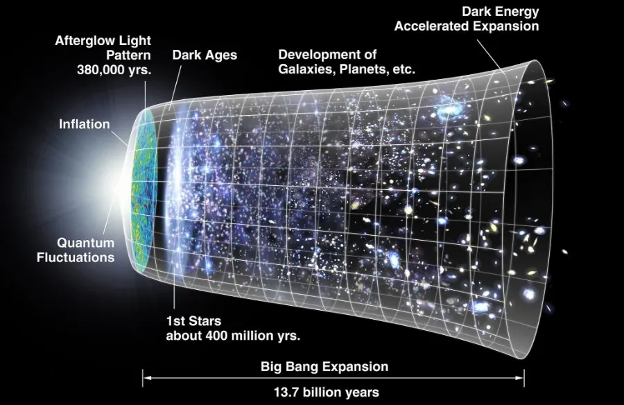
Evidence 1: spectroscopy
measures the spectra produced when materials interact with or give off electromagnetic radiation. A spectrum (plural spectra) is a range of from the : visible colors, X-rays, ultraviolet, microwaves, and radio waves (Figure 8.5). Wavelengths are created or absorbed inside atoms, and each element has its own wavelength signature. Even sunlight has gaps at some wavelengths, first observed by Joseph von Fraunhofer (1787–1826) in the early 1800s; decades later scientists linked the gaps to elements in the gases the light passes through. Spectroscopy shows that the Sun is mostly hydrogen and helium, gives the abundance of elements in distant stars and in the visible universe, and also works as an interstellar speedometer.
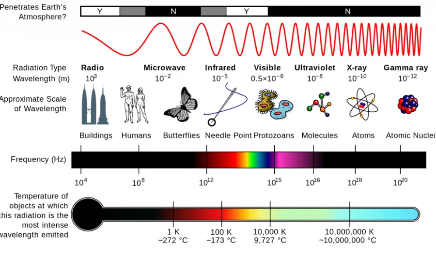
Evidence 2: redshift
The changes the pitch of an approaching car or ambulance from high to low as it passes: waves are compressed in front of a moving source (higher pitch) and stretched behind it (lower pitch) (Figure 8.6). Applied to light from stars and galaxies, it gives their speed and direction. Vesto Slipher (1875–1969) and Edwin Hubble (1889–1953) found that almost all galaxies outside our own are moving away from each other and from us. Light from a receding object is stretched toward the red end of the spectrum, a (Figure 8.7). Hubble also noticed that farther galaxies have a greater redshift, so they are moving away faster. The only way to reconcile this is that the universe is still expanding; Hubble's observation forms the basis of big-bang theory.
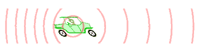
Evidence 3: cosmic microwave background radiation
was discovered by accident by Arno Penzias (1933–) and Robert Woodrow Wilson (1936–) while they were trying to remove background noise from a communication satellite. It is a very faint energy, or heat, found everywhere in the universe, left behind from the big bang like an echo (Figure 8.8).

8.1.2 Stellar evolution
Astronomers think the big bang made the lighter : mostly hydrogen, with smaller amounts of helium, lithium, and beryllium. The other 90 heavier elements were made later, inside stars, as the model of stellar evolution explains (Figure 8.9).
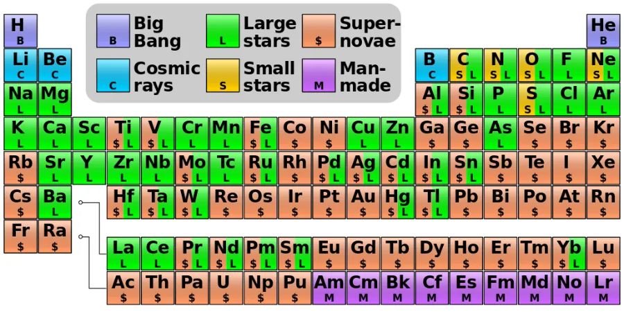
Birth of a star
Stars begin as elements floating in cold, spinning clouds of gas and dust called (Figure 8.10). Gravity, or perhaps a nearby stellar explosion, makes the material condense and spin into a disk. Material concentrates in the center, the growing gravity pulls in more mass, and eventually the heat and pressure reach a critical point that starts fusion: a star is born.

Fusion and the main phase
is a nuclear reaction, not a chemical one: two or more nuclei (the centers of atoms) are forced together into a new, larger atom, giving off a tremendous amount of energy as light and solar radiation. In a star's core, hydrogen fuses into helium (Figure 8.11), and that energy reaches Earth as light and heat. Because fusion is steady and predictable and stars hold plenty of hydrogen, this main phase can last billions of years with steady size and energy output.

Giant phase
When a star runs out of hydrogen, a large enough star has the heat and pressure to fuse helium into heavier elements. This more energetic fusion makes the star larger and brighter: the giant phase. The Sun is predicted to reach it in another few billion years, growing to about Earth's orbit and making life impossible. A star's mass during its main phase decides how it evolves (Figure 8.12). In very large stars, each time one fusion fuel runs out, fusion moves to heavier elements, building carbon, oxygen, and so on, until it reaches iron and nickel. That explains why rocky objects like Earth have so much iron and nickel. Any further fusion would absorb energy instead of releasing it, which begins the end of the star's life.

Death of a star
When fusion ends, gravity wins the tug-of-war with fusion's outward push. Stars like the Sun collapse their outer layers, which puff away as a . More massive stars collapse more violently and explode as a : the core's collapse halts suddenly and sends out a massive shock wave (Figure 8.13). A supernova is the most energetic explosion in the universe short of the big bang, and its fusion can make every element up through uranium. What is left depends on the star's size (Table 8.1).
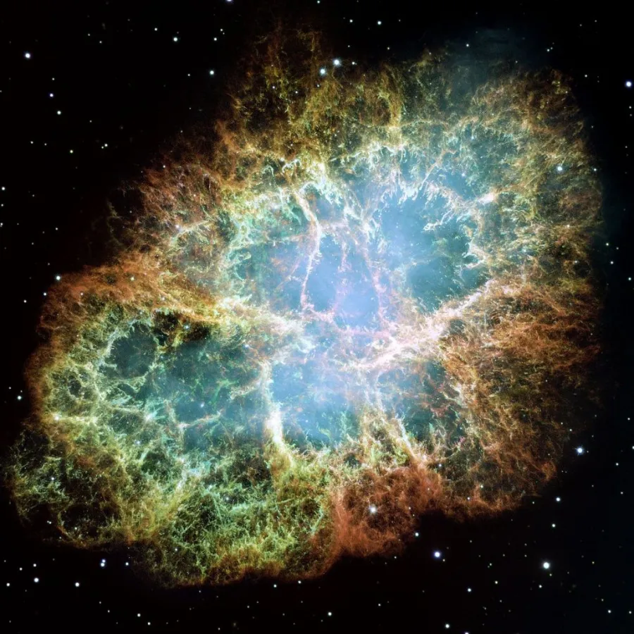
| Remnant | Comes from | What it is |
|---|---|---|
| Stars like the Sun | A hot star ember: most of the dying star's mass packed into a small, dense object about the size of Earth. | |
| Larger stars that explode in a supernova | Mass packed even tighter, so dense that protons combine with electrons to form neutrons. | |
| The largest stars | Mass collapsed so far that light cannot escape its gravity; the physics inside is still debated. |
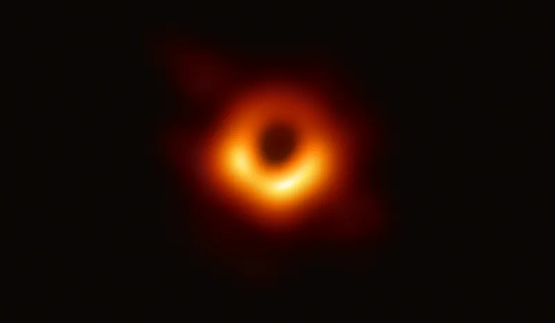
Check yourself: Section 8.1 quiz in the textbook ↗
8.2Origin of the solar system: the nebular hypothesis
Our solar system formed at the same time as the Sun. The says that a spinning cloud of dust made mostly of light elements, a nebula, flattened into a and became a : a star with orbiting planets. The spinning nebula collected most of its material in the center, which is why the Sun holds over 99% of the solar system's mass.

8.2.1 Planet arrangement and segregation
As the solar system formed, the disk developed distinct temperature zones (Figure 8.16). Close to the center it was so hot that only metals and silicate minerals with high melting points could condense. Farther out it was cool enough for lighter molecules such as methane, ammonia, carbon dioxide, and water to condense too. That is why the inner four planets are rocky and the outer four are gas giants.
Rocky and gas planets grew the same way. Dust particles in the disk stuck together by static charges and, later, gravity. The clumps collided, stuck, and formed proto-planets, which kept growing for thousands to millions of years as more disk material was added (Figure 8.17). Every planet started with a solid core: rocky planets built more rock on it, while gas planets added gas and ice. Ice giants formed later at the outer edge of the disk and gathered less gas and more ice (Table 8.2).

| Kind | Planets | Made of | How they grew |
|---|---|---|---|
| Rocky | Mercury, Venus, Earth, Mars | Metals and silicate rock | Solid core with more rock built on it, in the hot inner zone |
| Gas giants | Jupiter, Saturn | Over 90% hydrogen and helium gas | Solid core that added large amounts of gas and ice |
| Ice giants | Uranus, Neptune | Mostly methane ices, only about 20% hydrogen and helium | Formed later at the outer edge of the disk, gathering less gas and more ice |
The gas giants are also far larger, for two reasons. First, the nebula held more gases and ices than metals and rock (abundant hydrogen, carbon, oxygen, and nitrogen, but less silicon and iron), so the outer planets had more building material. Second, their stronger gravity let them gather large amounts of hydrogen and helium that the weaker gravity of the small planets could not hold.
Jupiter's huge gravity shaped the rest of the solar system. It sped up nearby material, so objects smashed apart instead of sticking together. These collisions created the between Mars and Jupiter, an unfinished planet and the source of most that hit Earth today (Figure 8.18). Studying asteroids and meteorites helps geologists work out Earth's age and the composition of its core, mantle, and crust. Jupiter may also explain Mars's small mass: as Jupiter migrated from the inner to the outer edge of the solar system, it consumed material.
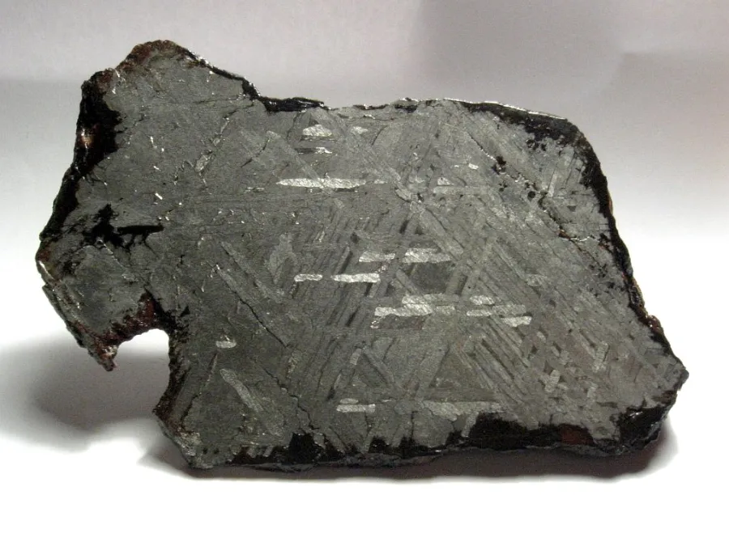
Pluto and the definition of a planet
The outermost solar system holds the , a scattering of rocky and icy bodies, and beyond it the , a zone of small, dispersed ice. Most comets form and orbit in these two regions, on more irregular orbits than the rest of the solar system. Pluto, once the ninth planet, lies here. In 2006 the XXVIth General Assembly of the International Astronomical Union (IAU) removed Pluto's planet status after the discovery of Eris, an object more massive than Pluto. The IAU decided not to make Eris a planet, so it excluded Pluto too, and narrowed the definition of a planet (Table 8.3). Pluto and Eris are now .
| Criterion | Pluto |
|---|---|
| 1. Enough mass for its gravity to pull it into a round shape | Passes |
| 2. Not massive enough to start fusion | Passes |
| 3. Large enough to have cleared its orbit of other planetesimals that should have joined it when it formed | Fails |
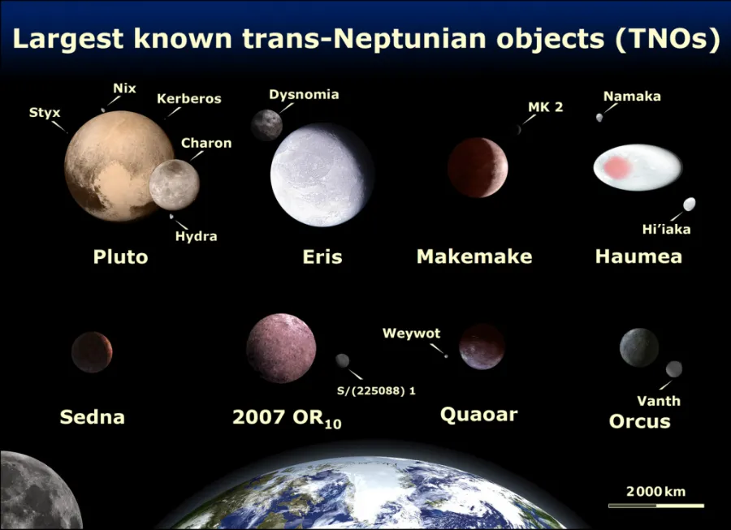
Check yourself: Section 8.2 quiz in the textbook ↗
8.3Hadean Eon
Geoscientists use the geologic time scale to give relative age names to rocks and events, separating major events by big changes in rocks and fossils (Unit 7). The , named after Hades, the Greek god and ruler of the underworld, is the oldest eon, about 4.5–4.0 billion years ago.
Earth's earliest history had a partly molten surface, volcanism, and asteroid impacts (Figure 8.20). Three sources made the new Earth incredibly hot: gravitational compression, radioactive decay, and asteroid impacts. Most of that first heat is still inside Earth. The Hadean was first defined as Earth's birth before many rocks and life forms existed, but minerals dated at 4.4 billion years show that liquid water was present, and there is possible evidence of life over 4.0 billion years ago. The most reliable record of early life, microfossils, starts at 3.5 billion years ago.
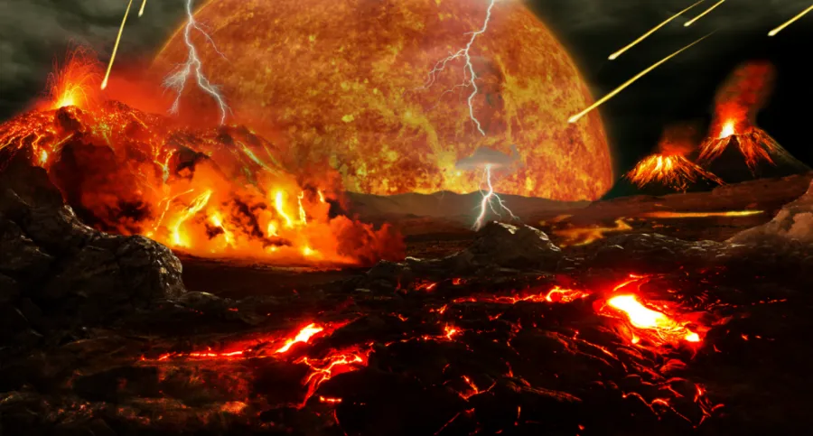
8.3.1 Origin of Earth's crust
The earliest Earth was mostly molten, rounded by gravity like a ball of lava in space. As the outside cooled, minerals with high melting points (Bowen's reaction series, Unit 4) formed solid slabs of early crust. These slabs were probably unstable and sank back into the magma until Earth cooled enough for many larger pieces to form a thin, primitive crust. Scientists generally assume it was oceanic and , covered in impacts like the Moon's crust today. When plate tectonics began, and with it the making of continental, crust, is still debated.
As Earth cooled and crystallized, minerals separated by density (Figure 8.21): less dense felsic minerals floated up to form the , denser mafic and material sank to form the mantle, and the densest iron and nickel sank into the core. This turned a uniform (homogeneous) planet into a layered (heterogeneous) one: felsic crust, mafic crust, ultramafic , and iron-nickel .

8.3.2 Origin of the Moon
Two features of the Moon shaped ideas about its origin. Earth and Moon are : one side of the Moon always faces Earth and the other side is never visible from here (Figure 8.23). Most importantly, Apollo rock samples show that Earth and Moon have nearly identical isotope ratios and volatile contents, while other solar-system bodies and meteorites vary much more. If the two formed together, that would explain the match.
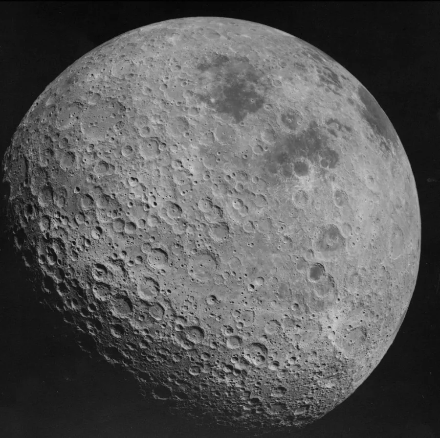
Earlier ideas were that the Moon was captured from another part of the solar system, formed in place together with Earth, or was ripped out of the early Earth; none explains all the evidence. The prevailing proposes that a body about half Earth's size shared at least part of Earth's orbit and collided with it, violently mixing and scattering material from both (Figure 8.24). More of the lower-density splatter came together as the Moon, which may explain why Earth is denser and has a thicker core than the Moon.

8.3.3 Origin of Earth's water
There is no definitive answer for where Earth's ocean water came from. Three sources have been proposed, and all three may have contributed (Table 8.4).
| Source | Idea | Evidence |
|---|---|---|
| Water came from inside the planet, released as vapor in volcanic eruptions by tectonic processes | All eruptions contain some water vapor, sometimes over 1% of the volume; this alone could have made the surface water | |
| Comets | Comets of dust and ice (much of it frozen water) hit the cooled surface during heavy bombardment | Comets carry water ice (Figure 8.25), but their water is a poorer isotopic match to Earth's |
| Meteorites | Seemingly dry meteors carry small amounts of water, trapped in their mineral structures | Earth's water matches meteorite water much better than comet water, though Earth processes may have changed its isotopic signature over 4+ billion years |

Check yourself: Section 8.3 quiz in the textbook ↗
8.4Archean Eon
The , 4.0–2.5 billion years ago, is named after the Greek word for "beginning." It marks the beginning of the rock record: rocks and minerals existed in the Hadean, but the Archean has a much richer rock and fossil record (Figure 8.26).
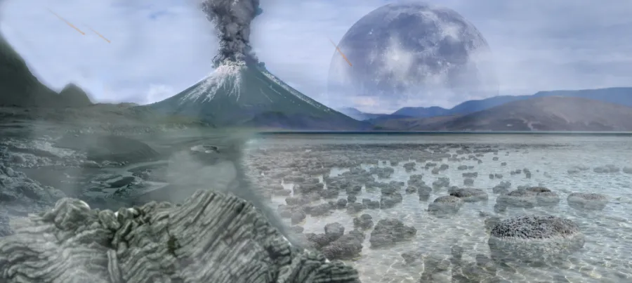
8.4.1 Late heavy bombardment
Objects flew around chaotically as the solar system began, building the planets and moons. There is evidence that after the planets formed, about 4.1–3.8 billion years ago, a second spike of asteroid and comet impacts hit Earth and the Moon: the . Asteroids and comets in stable or semi-stable orbits became unstable and struck objects throughout the solar system. It is also called the lunar cataclysm because most of the Moon's craters date from it; evidence was found in samples from the Moon. An early bombardment is universally accepted, but something else must have caused the second rise hundreds of millions of years later. A leading theory blames gravitational resonance between Jupiter and Saturn, which disturbed orbits in the asteroid and Kuiper belts, based on a similar process seen in the Eta Corvi star system (Figure 8.28).
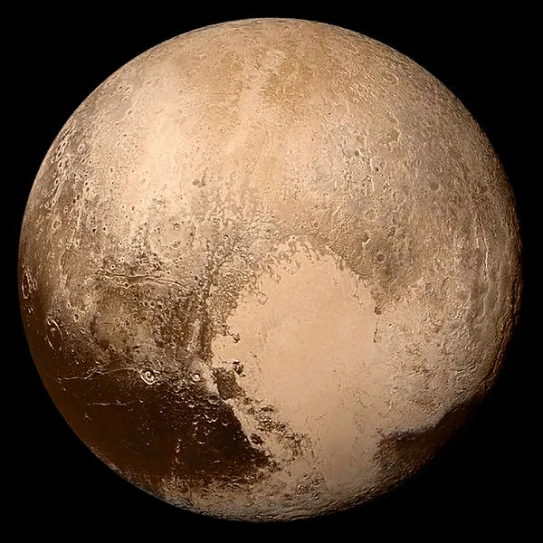

8.4.2 Origin of the continents
Plate tectonics as it works today needs continents, but the easiest way to make continental material is by assimilation and differentiation of existing continents (Unit 4). This chicken-and-egg problem is hard to solve because continental material is so old and so much evidence has been lost to tectonics and erosion. Volcanism must have brought the first continental material to the surface in the Hadean, 4.4 billion years ago, but that does not solve the problem, since seems to need thicker crust. The best idea is that density differences let light felsic material float up and heavy ultramafic material and metallic iron sink, producing the layers now detected by seismic studies (Figure 8.29). Early protocontinents gathered felsic material as developing plate-tectonic processes brought light material from the mantle to the surface, for example where island arcs formed and joined (Figure 8.30).
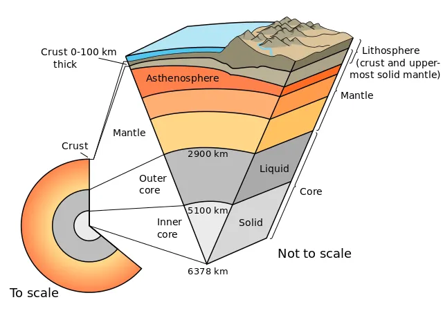
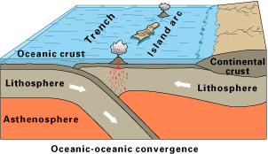
The first solid evidence of modern plate tectonics appears at the end of the Archean, so at least some continental lithosphere must have existed by then. This is not necessarily when plate tectonics started; earlier evidence could have been erased by the rock cycle.
The stable interiors of today's continents are , mostly formed in the Archean (Figure 8.31, Figure 8.32). A craton has two parts: the , crystalline rock near the surface, and the , sedimentary rocks covering the shield. Most cratons have changed little, with tectonic activity happening around them rather than within them. However they formed, Archean continents gave rise to the Proterozoic continents that dominate the planet today.
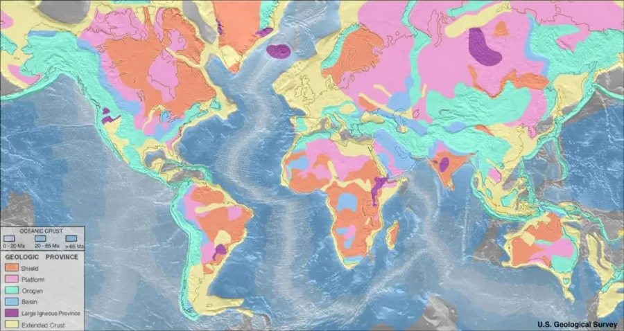
What counts as a continent, and where continental crust ends and oceanic crust begins, is debated. At continental crust grades into oceanic crust, and island-arc and hot-spot material can look more like continental crust than oceanic. Continents usually have a craton in the middle with felsic igneous rocks. Submerged masses such as Zealandia, which includes New Zealand, may count as continents (Figure 8.33). Continental crust without a craton is a , such as Madagascar off the east coast of Africa.
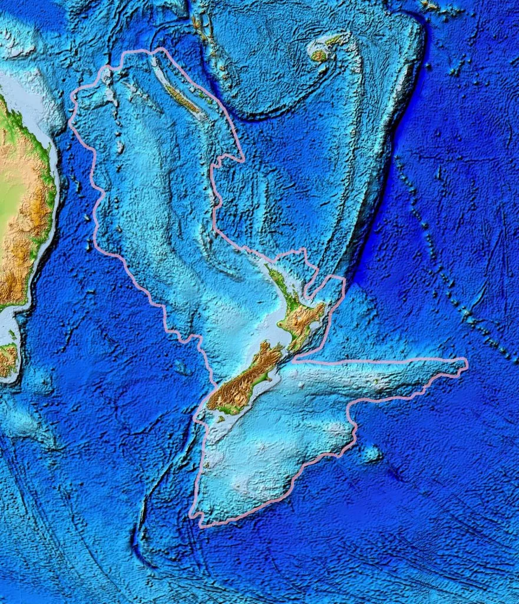
8.4.3 First life on Earth
Life most likely began in the late Hadean or early Archean. The earliest evidence is chemical signatures, microscopic filaments, and microbial mats (Table 8.5). The chemical and filament evidence is weaker than fossils, but there is strong fossil evidence for life at 3.5 billion years ago: photosynthetic microbial mats called , found in Australia.
| Age | Evidence | Where |
|---|---|---|
| 4.1 billion years | Carbon with a chemical signature that suggests an organic origin | Inside zircon grains |
| 3.8–4.3 billion years | Microscopic filaments | Hydrothermal vent deposit, Quebec, Canada |
| 3.5 billion years | Well-preserved fossils: stromatolites (photosynthetic microbial mats) | Australia |
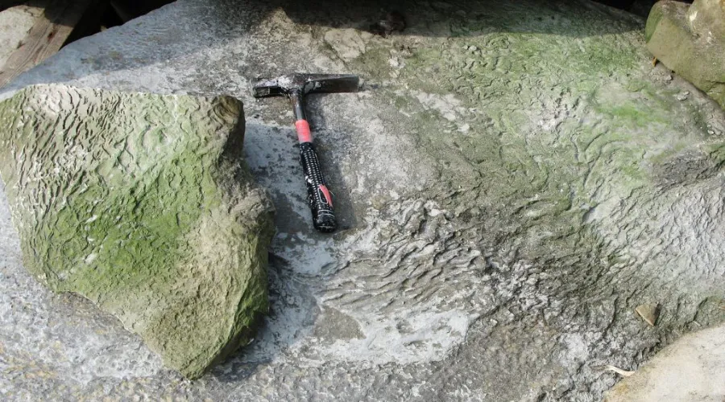
How life began is unknown. Three hypotheses are compared in Table 8.6. Early Earth's atmosphere had no oxygen, making a rich in methane, carbon dioxide, sulfur, and nitrogen compounds, like the atmospheres of other bodies in the solar system today (Figure 8.35). Scientists have since widened the search for life to unusual places such as Jupiter's icy moon Europa.
| Hypothesis | Idea | Support |
|---|---|---|
| Chemical origin | Life arose from the chemistry of the early atmosphere and oceans | The sparked a simulated early atmosphere in a sealed vessel and made amino acids, the building blocks of proteins |
| Deep-sea hydrothermal vents | Life began on the deep ocean floor, powered by Earth's internal heat | In 1977 an isolated ecosystem was found around vents on a mid-ocean ridge, built on instead of photosynthesis; it draws energy from hot, chemical-rich water |
| From space | Life or its building blocks arrived on comets or other objects | Amino acids have been found in comets and meteorites; this would also make life elsewhere likely |
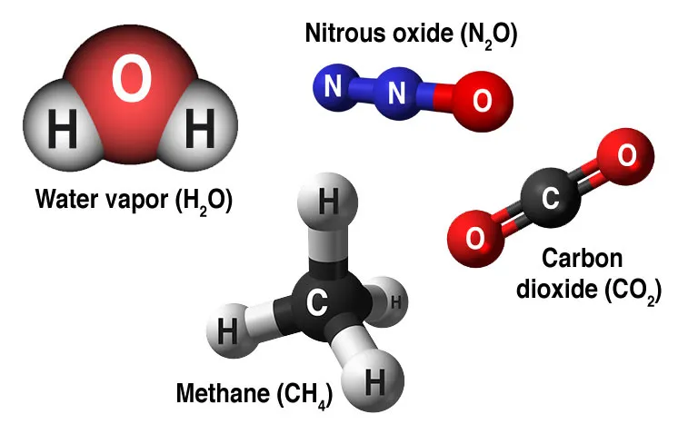
Check yourself: Section 8.4 quiz in the textbook ↗
8.5Proterozoic Eon
The ("earlier life") runs from 2.5 billion to 541 million years ago. By then most of the central parts of the continents had formed and plate tectonics had started. Single-celled had been slowly adding oxygen to the oceans by photosynthesis (Figure 8.36). As they evolved into multicellular organisms, they transformed the oceans and then the atmosphere with massive amounts of free oxygen gas (O2): the (GOE). The change wiped out many anaerobic bacteria, which cannot survive free oxygen, while aerobic organisms could now thrive.
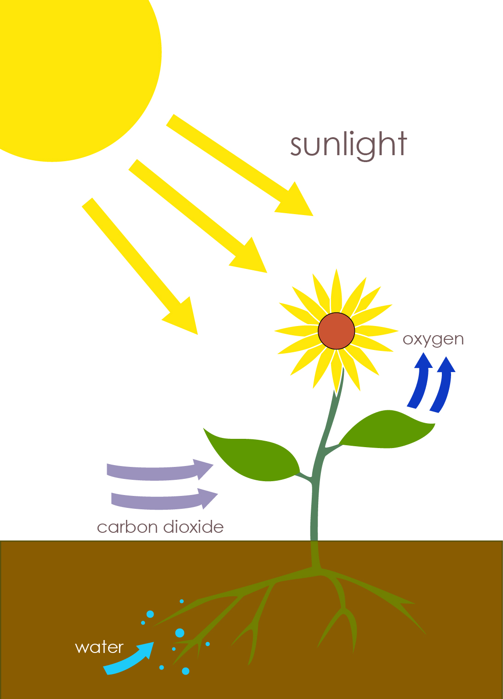
Oxygen also changed the planet's chemistry (Figure 8.37). In the oxygen-free Archean (a reducing environment), iron stayed dissolved in seawater. Once oxygen appeared, iron combined with it and as iron oxides such as hematite and magnetite. These built up, with red chert, into , dated at about 2 billion years (Figure 8.38). Because this precipitation pulled oxygen out of the water and locked it in rock, oxygen levels stayed low for a long time. When precipitation leveled off, dissolved oxygen saturated the oceans and bubbled out into the atmosphere. Oxygenation of the atmosphere is the single biggest difference between Archean and Proterozoic environments.
The GOE is also thought to have triggered Earth's first glaciation, the , around 2.1 billion years ago. Free oxygen reacted with methane to make carbon dioxide. Both are , which trap heat like the glass of a greenhouse, but methane is the more effective insulator; as carbon dioxide replaced it, the weakened and the planet cooled.

8.5.1 Rodinia
By the Proterozoic, lithospheric plates had formed and moved much as they do now. As plates collided and ocean basins closed, they assembled the supercontinent about 1 billion years ago (Figure 8.39). It broke up about 750 to 600 million years ago, at the end of the Proterozoic. One fragment was , which later became North America. Geologists reconstruct Rodinia like a jigsaw puzzle, matching and aligning ancient mountain chains and using paleomagnetism to orient the pieces to magnetic north. Reconstructions disagree: there are at least six models for how Rodinia broke up into pieces such as Australia, Antarctica, parts of China, the Tarim craton north of the Himalaya, Siberia, or the Kalahari craton of Africa. The breakup created many shallow-water environments favorable to life, which fostered the evolutionary breakthroughs that begin the next eon, the Phanerozoic.
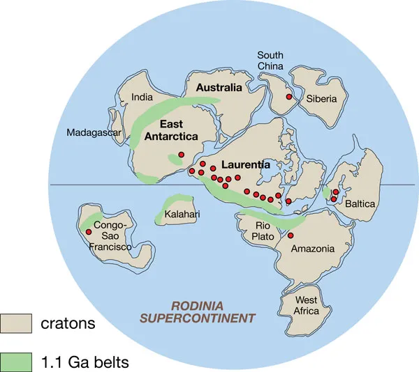
8.5.2 Life evolves
Archean and earlier life is poorly preserved. Chemical evidence and evolutionary theory suggest it was single-celled and photosynthetic, like the cyanobacteria that built stromatolites and released oxygen into the atmosphere (Figure 8.40). Cyanobacteria, archaea, and bacteria are . A big evolutionary step came with , about 2.1 to 1.6 billion years ago (Table 8.7); the eukaryote branch later gave rise to fungi, plants, and animals. About 1.2 billion years ago eukaryotes "invented" sexual reproduction. Sharing genes between two parents greatly increased variation in offspring, which sped up evolution and made organisms and ecosystems more complex (Unit 7).
| Prokaryotes | Eukaryotes | |
|---|---|---|
| Cells | Single cells without a nucleus or other organelles | More complex cells with a nucleus and organelles |
| DNA | Simpler | Nuclear DNA allows more complex copying and control |
| Organelles | None | Mitochondria (make energy) and chloroplasts (photosynthesis) |
| Examples | Cyanobacteria, archaea, bacteria | Fungi, plants, animals |
| First appear | Archean or earlier | About 2.1–1.6 billion years ago |

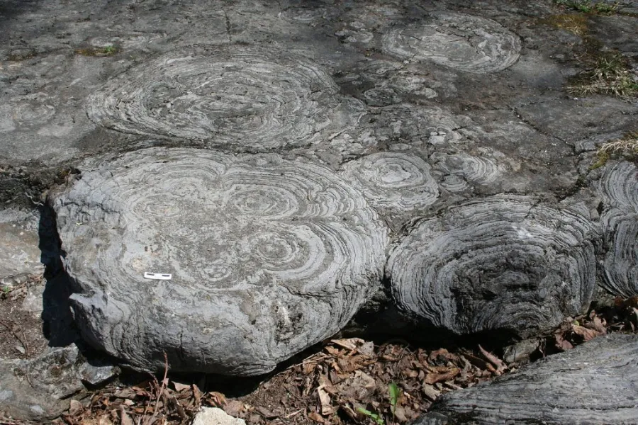
Proterozoic land had no plants or animals, so rain and rivers eroded the bare surface much faster than today. That produced thick deposits of pure quartz sandstone, such as the quartzite in the core of the Uinta Mountains, Utah.
The , from the Ediacaran Period (635.5 to 541 million years ago), gives the first look at the variety of ecosystems near the end of the Proterozoic (Figure 8.42). These soft-bodied organisms were among the first multicellular life, probably similar to jellyfish or worms. With no hard parts like shells, they were poorly preserved, though studies suggest they were widespread in the oceans. Scientists still debate how many were dead ends and how many were ancestors of modern groups. The change from soft-bodied Ediacaran life to life with hard parts, at the boundary of the Proterozoic and Phanerozoic, made a dramatic difference to how well scientists can read the history of life.
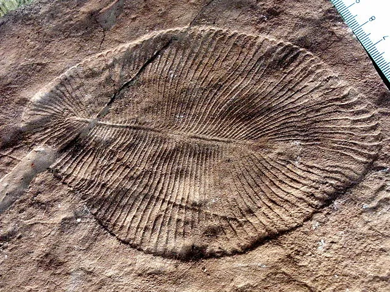
Check yourself: Section 8.5 quiz in the textbook ↗
8.6Phanerozoic Eon: Paleozoic Era
The , 541 million years ago to today, means "visible life": its rocks are full of fossils because organisms had hard parts (claws, scales, shells, bones) that preserve easily. Rocks of the older are less common and rarely hold fossils, because those organisms had soft bodies. The Phanerozoic is divided into three eras: ("ancient life"), ("middle life"), and ("recent life").

Early Paleozoic life was mostly marine, but by the middle of the era plants and animals lived and reproduced on land. Fish evolved jaws, and fins evolved into jointed limbs. Lungs let animals leave the sea as the first air-breathing (four-legged animals) such as amphibians. Reptiles, with the , evolved from amphibians, and an early ancestor of birds and mammals evolved from reptiles, its scales becoming feathers and fur. Near the end of the era, the Carboniferous Period had some of the largest forests in Earth's history, whose remains became the coal that powered the industrial revolution.

8.6.1 Paleozoic tectonics and paleogeography
During the Paleozoic, sea level rose and fell four times. With each rise, most of North America (Laurentia, Figure 8.45) was covered by a shallow tropical ocean, leaving abundant marine sedimentary rocks such as limestone with fossil corals and . Big sea-level falls left widespread . Today the midcontinent has extensive Paleozoic marine sedimentary rocks, and western North America has thick marine limestone on block-faulted mountains such as Mt. Timpanogos near Provo, Utah.
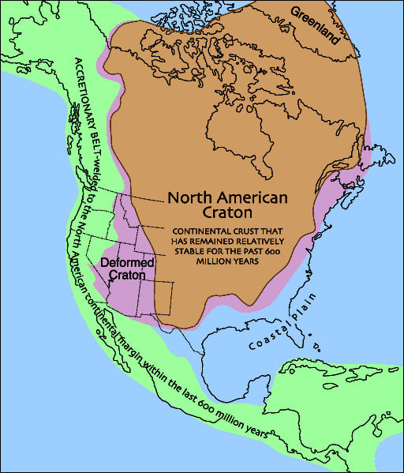
The supercontinent (also spelled Pangaea, "all land," named by Alfred Wegener) was complete by the late Paleozoic (Figure 8.46). It gathered all major continents through subduction, island-arc accretion, continental collisions, and ocean-basin closures. In North America these were on the east coast: the Taconic, Acadian, Caledonian, and Alleghanian ; the Appalachian Mountains are their eroded remains. A global ocean, , surrounded Pangea. Plate movement later pushed the ocean into Pangea as a large bay, the , which eventually split it into two smaller supercontinents: (Laurentia and Eurasia) and (South America, Africa, India, Australia, and Antarctica).
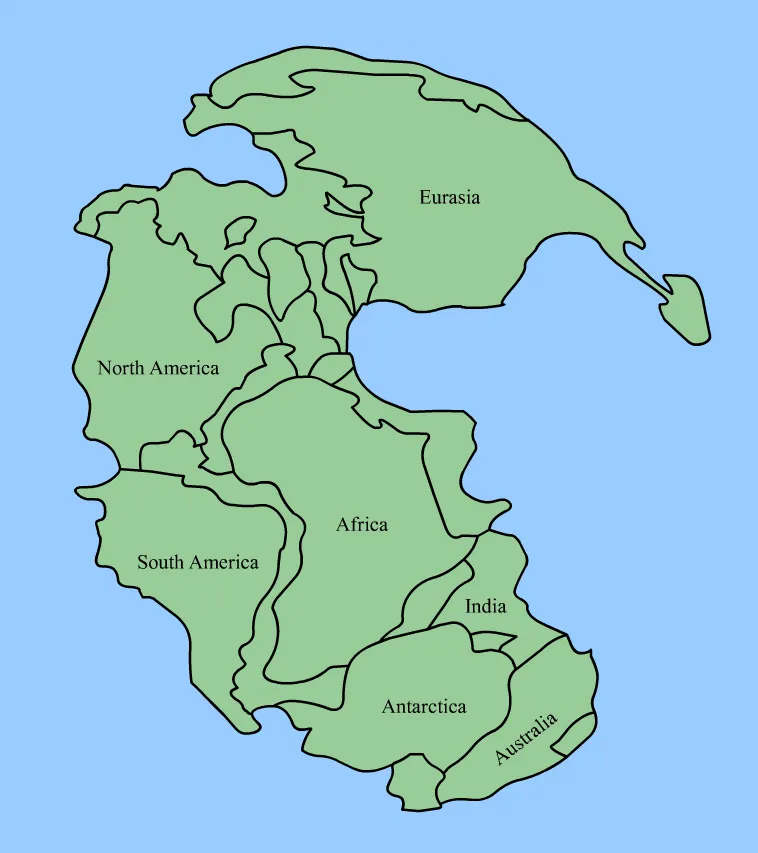
While the east coast was tectonically active, the west coast was a quiet in the early Paleozoic, near today's Nevada-Utah border: a broad, shallow continental shelf near the paleoequator. In the Devonian the began and lasted into the Pennsylvanian: a volcanic island arc, with subduction directed away from North America, was accreted onto the west coast, building the Antler highlands and starting the land that would become most of California, Oregon, and Washington. In the late Paleozoic the , another island-arc collision, began. It marks the switch to subduction toward North America, with a volcanic arc along the whole west coast by the late Paleozoic to early Mesozoic.
By the end of the Paleozoic, the east coast had a very high mountain range from the continental collision that built Pangea, and the west coast had smaller, isolated volcanic highlands from island-arc accretion. In the Mesozoic this flipped: the west coast became the active plate boundary and the east coast became a passive margin after Pangea broke up. Table 8.8 collects all the orogenies in this chapter.
| Orogeny | Coast | When | What happened |
|---|---|---|---|
| Taconic, Acadian, Caledonian, Alleghanian | East | Paleozoic | Subduction, arc accretion, and collisions that assembled Pangea; eroded remains are the Appalachians |
| Antler | West | Devonian to Pennsylvanian | Island arc accreted, with subduction away from North America; Antler highlands |
| Sonoma (Sonoman) | West | Latest Paleozoic to Triassic | Another island-arc collision (in Nevada); subduction turns toward North America |
| Nevadan | West | Jurassic | Island-arc collision; a large Andean-style volcanic arc and thrust belt |
| Sevier | West | Cretaceous | Volcanic arc to the west and a thin-skinned fold and thrust belt to the east |
| Laramide | West (reaching far inland) | Early Cenozoic | Thick-skinned uplifts from shallow subduction: Rockies, Black Hills, Wind River Range, Uinta Mountains, San Rafael Swell |
8.6.2 Paleozoic evolution
Table 8.9 summarizes each period; the details follow.
| Period | Ma | Life | Ends with |
|---|---|---|---|
| Cambrian | 541–485 | Cambrian Explosion: hard parts and most animal phyla appear; Burgess Shale animals; Pikaia, early chordate | |
| Ordovician | 485–444 | Great Ordovician Biodiversification Event; reef-building colonial corals | Mass extinction 1 (ice age, sea-level drop) |
| Silurian | 444–419 | Jaws; placoderms; first land plants (Cooksonia) and land animals | |
| Devonian | 419–359 | Age of Fishes; lobe-finned fish; Tiktaalik; first trees and forests | Mass extinction 2 (reef builders hit hardest) |
| Carboniferous (Mississippian, Pennsylvanian) | 359–299 | Highest oxygen ever; swamp forests; giant arthropods; first fully terrestrial tetrapods; reptiles; Karoo glaciation | |
| Permian | 299–252 | Drier Pangea; reptiles dominate; synapsids (Dimetrodon), then therapsids | Mass extinction 3, the largest ever |
Cambrian
The Paleozoic begins with the first hard body parts (shells, spikes, teeth, scales) and the appearance of most animal phyla, the basic animal body plans, during the Cambrian Period, 541–485 million years ago. This sudden burst of diversity is the . Scientists debate whether it reflects rapid evolution in a warmer climate after late Proterozoic glaciations, better preservation of hard parts, or simply a more complete, more recent rock record; Ediacaran fauna may already have been diverse but left few fossils.
One of the best Cambrian fossil sites is the Burgess Shale in western Canada, found in 1909 by Charles Walcott (1850–1927). It is a , a site of exceptional preservation that includes impressions of soft parts; similar sites in China and Utah fill in the picture. The biggest mystery is animals that fit no living lineage (Figure 8.47): the first compound-eyed trilobites; Wiwaxia, covered in spiny plates; Hallucigenia, a walking worm with spikes; Opabinia, a five-eyed arthropod with a grappling claw; and Anomalocaris, the top predator of its time, with grasping appendages and a circular mouth of sharp plates. Also Cambrian is Pikaia, a segmented worm thought to be the earliest ancestor of the , the phylum that includes vertebrates (animals with backbones) and humans.
 AAnomalocaris reconstruction, MUSE science museum, Italy. Matteo De Stefano/MUSE, CC BY-SA.
AAnomalocaris reconstruction, MUSE science museum, Italy. Matteo De Stefano/MUSE, CC BY-SA.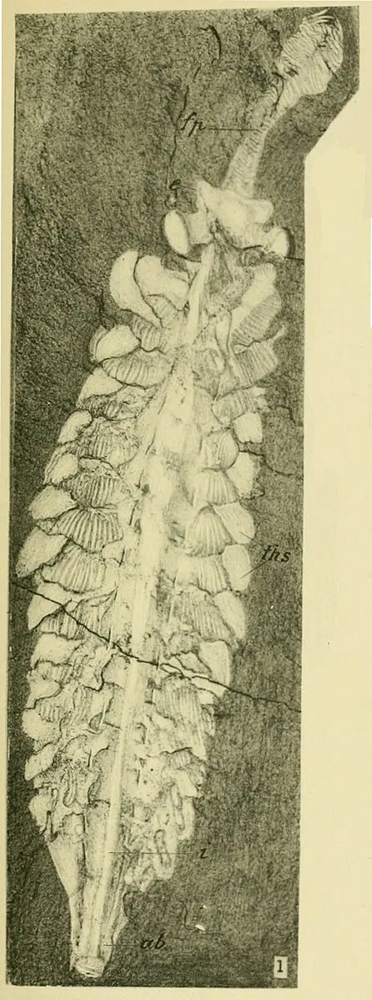
BPlate from Walcott's 1912 description of Opabinia: fp frontal appendage, e eye, ths thoracic segments, i intestine, ab abdominal segment. Charles D. Walcott, public domain.
Ordovician
By the end of the Cambrian, mollusks, brachiopods, nautiloids, gastropods, graptolites, echinoderms, and trilobites covered the sea floor. Most phyla existed, but diversity at the family, genus, and species level stayed low until the . During the , vertebrates and invertebrates (animals without backbones) became more diverse and complex. Likely causes are warm temperatures, wide continental shelves near the equator, and more volcanism at mid-ocean ridges, which added nutrients to the ocean; some evidence also links it to an asteroid breakup and the meteorite impacts that followed. Mollusks, corals, and arthropods multiplied to dominate the oceans.
Reef-building organisms, mostly colonial corals, were a key Ordovician advance. They used calcite to build large structures like modern reefs such as the Great Barrier Reef (Figure 8.48), home to organisms that swam around, hid in, and crawled over them. Reefs matter to paleontologists because they preserve well, are huge, and keep whole ecosystems in place (Figure 8.49).

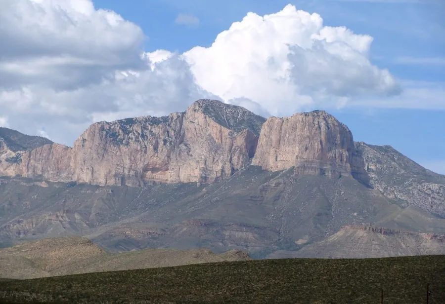
Glacial deposits show that a small ice age lowered sea level and caused a major at the end of the Ordovician, the first of five in the fossil record, when an unusually large number of species disappear abruptly (Table 8.11).
Silurian
Life recovered in the . Its major evolutionary event was jaws, developed from the forward pair of gill arches in bony fishes and sharks; hinged jaws opened new food sources and ecological niches. Armored fishes, the , began (Figure 8.50). Silurian rocks also hold the first evidence of land plants and animals. The first , Cooksonia, had woody tissue, pores for gas exchange, and veins to carry water and food. Insects, spiders, scorpions, and crustaceans began to live in moist freshwater land environments.
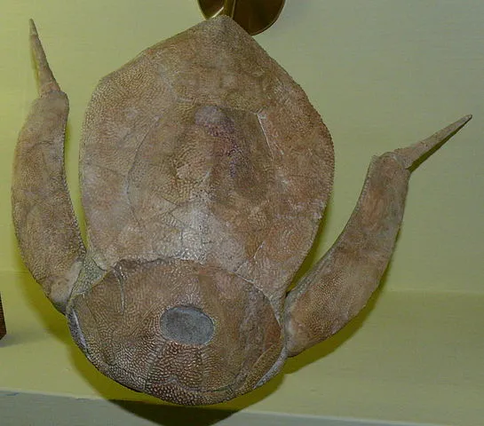
Devonian
The is the Age of Fishes, with plated, jawed, and . Lobe-finned fishes, relatives of the modern lungfish and coelacanth, matter because they evolved into tetrapods, four-limbed vertebrates that walk on land (Figure 8.51). Tiktaalik, the first lobe-finned land-walking fish, appeared about 385 million years ago; it was clearly a fish but had some tetrapod structures, so it is a transition fossil. Several Devonian fossils are more tetrapod than fish but were not fully terrestrial. Land plants evolved into the first trees and forests. Near the end of the Devonian came the second mass extinction; it was severe but is the least well dated, with wide variation in the timing of the event or events. Reef builders were hit hardest, changing marine ecosystems dramatically.

Carboniferous
The first fully terrestrial tetrapods arrived in the Mississippian (early ). By then tetrapods had split into two groups from a common ancestor: amphibians, which breathe air and live on land but need water for their soft eggs, and amniotes. The first reptiles (amniotes) could live and reproduce entirely on land, because the amniote egg has a protective shell that does not dry out. North American geologists divide the Carboniferous into the Mississippian and Pennsylvanian periods. It had the highest oxygen levels known, with forests of ferns and club mosses and swamps dominating the land. This helped produce the largest arthropods ever, such as the millipede Arthropleura, 2.5 m long (Figure 8.52). Booming plant life pulled carbon dioxide out of the atmosphere and cooled the climate; by the middle Carboniferous this led to an ice age, the , which lasted into the early Permian. Reptiles fared much better than amphibians and diversified.
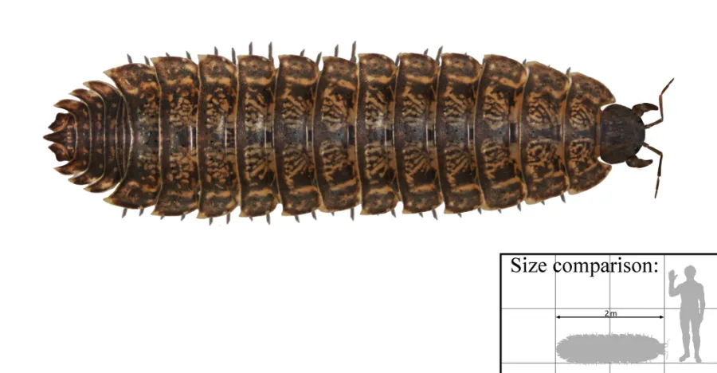
Permian
With Pangea assembled, the climate became drier, and reptiles diversified and dominated even more; groups that grew up in this warm climate later radiated into dinosaurs. Another group, the , eventually evolved into mammals. Synapsids such as the sail-backed Dimetrodon are often mistaken for dinosaurs (Figure 8.53). Pelycosaurs (Pennsylvanian to early Permian, like Dimetrodon) are the first synapsids with early mammal features, such as well-differentiated teeth: incisors, large canines in both jaws, and cheek teeth (premolars and molars). From the late Permian a second synapsid group, the ("mammal-like reptiles"), evolved and became the ancestors of mammals.
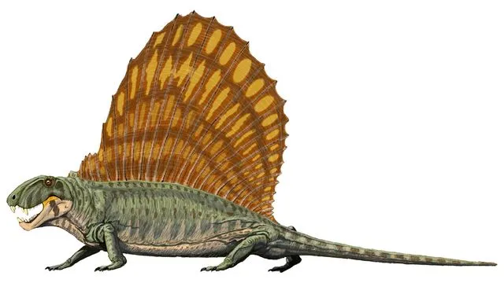
Permian mass extinction
The Paleozoic ends with the largest mass extinction in Earth history, the (Permian-Triassic Extinction Event). Up to 96% of marine species and 70% of land (terrestrial) vertebrates died out; sea scorpions and trilobites were never seen again. The cause is still debated, but the leading idea is the volcanism of the , one of the largest deposits on Earth, dated to the time of the extinction (Figure 8.54). Over 3 million cubic kilometers erupted, about 4,000,000 times the 1980 Mt. St. Helens eruption. The eruptions released toxic gases, aerosols, and greenhouse gases, and may have burned vast coal deposits, releasing methane. A runaway greenhouse effect may have rapidly changed the climate, acidified the oceans, and disrupted food chains and carbon cycling.

Check yourself: Section 8.6 activity in the textbook ↗
8.7Phanerozoic Eon: Mesozoic Era
After the Permian mass extinction, the Mesozoic ("middle life") lasted from 252 to 66 million years ago. As Pangea broke apart, mammals, birds, and flowering plants developed. The Mesozoic is best known as the age of reptiles, above all the dinosaurs (Figure 8.55).

8.7.1 Mesozoic tectonics and paleogeography
Pangea began breaking up around 210 million years ago in the Late Triassic, in the region that became eastern Canada and the United States (Figure 8.56). Clear evidence comes from the ages of the sediments in the Newark Supergroup rift basins, the Palisades sill in eastern North America, and the Atlantic sea floor. Because of sea-floor spreading, the oldest Atlantic floor lies along the coasts of northern Africa and eastern North America and the youngest along the mid-ocean ridge (Figure 8.57). So the Atlantic first opened there, as the young Mid-Atlantic Ridge began making sea floor. The southern Atlantic opened next, as South America separated from central and southern Africa. Last, after the Mesozoic, the northernmost Atlantic opened as Greenland and Scandinavia parted. The rifted edges became today's passive margins on the east coasts of the Americas.


In western North America, an active margin with subduction controlled most Mesozoic tectonics. Another possible island-arc collision made the Sonoman orogeny in Nevada (latest Paleozoic to Triassic). In the Jurassic, another island-arc collision caused the , a large Andean-style volcanic arc and thrust belt. The followed in the Cretaceous: a volcanic arc to the west and a fold and thrust belt to the east, where stacks of shallow faults and folds built the topography (Figure 8.58). Many structures in today's Rocky Mountains date from it.
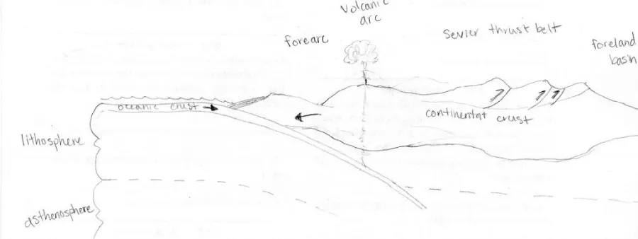
Tectonics also made the Cretaceous Western Interior Foreland Basin, which flooded during high sea levels to form the (Figure 8.59). The plate subducting from the west was the , an oceanic plate connected to the Pacific plate (its remnants include today's Juan de Fuca plate off the Pacific Northwest). Subduction was shallow because a very young, hot, less dense part of the Farallon plate was going down, and this warped central North America downward. Shallow subduction, faster sea-floor spreading and subduction, high temperatures, and melted ice all raised sea level. A shallow epicontinental seaway reached from the Gulf of Mexico to the Arctic Ocean and split North America into Laramidia (west) and Appalachia (east) for 25 million years. Swamps along its shores made many coal deposits in Utah and Wyoming. By the end of the Cretaceous, cooling caused the seaway to retreat.

8.7.2 Mesozoic evolution
Triassic
The Mesozoic is dominated by reptiles, especially dinosaurs. Ecosystems devastated by the Permian extinction took over 30 million years to fully recover in the . Many modern groups first appeared then: frogs (amphibians), turtles (reptiles), ichthyosaurs and plesiosaurs (marine reptiles, Figure 8.61), mammals, and the ("ruling reptiles"). Archosaurs include groups that died out at the end of the Triassic, the flying , crocodilians, and dinosaurs. Like the placental mammals after them, archosaurs filled every major environment: land (dinosaurs), air (pterosaurs), water (crocodilians), and the open sea (marine crocodiles). Pterosaurs were the first vertebrates to fly; like dinosaurs and mammals, they started small in the Triassic.

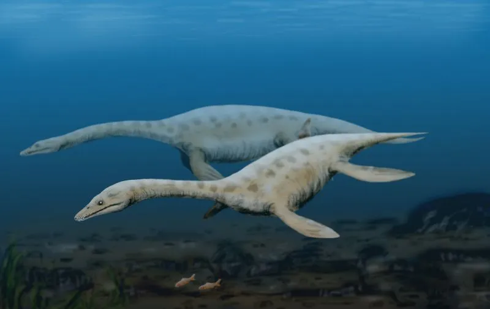
At the end of the Triassic came the fourth major mass extinction, perhaps caused by the flood basalt. It wiped out some lineages and helped survivors such as mammals, pterosaurs, marine reptiles (ichthyosaurs, plesiosaurs, mosasaurs), and dinosaurs to evolve.
Mammals arose from a reptile-like synapsid ancestor, possibly in the late Paleozoic. They stayed small and mostly nocturnal, eating prey no bigger than insects; warm-blooded circulation and fur may have developed for this lifestyle (Figure 8.62).

Jurassic
In the warmer, more tropical , groups that were already common flourished. Dinosaurs, relatively small in the Triassic, became truly massive. Dinosaurs are split into two groups, saurischians and , by hip structure, the orientation of the pubis and ischium bones (Figure 8.63, Table 8.10), although a new idea about dinosaur lineage has recently questioned this split. Most Triassic dinosaurs were , and all of them walked on two legs. Their key advantage was hip and ankle bones that tucked the legs under the body, unlike the semi-erect gait of crocodiles or the sprawl of other reptiles. Also in the Jurassic, Eophis, the oldest snake, evolved.
 A · Saurischian ("lizard-hipped")Open hip structure, similar to a lizard's. Fred the Oyster, CC BY-SA.
A · Saurischian ("lizard-hipped")Open hip structure, similar to a lizard's. Fred the Oyster, CC BY-SA.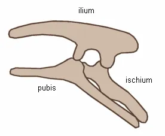
B · Ornithischian ("bird-hipped")Closed hip structure, similar to a bird's. Fredrik, CC BY-SA.
| Saurischians ("reptile-hipped") | Ornithischians ("bird-hipped") | |
|---|---|---|
| Hip | Open, like a lizard's | Closed, like a bird's |
| Main groups | Giant plant-eating, long-necked (up to 100 tons); two-legged meat-eating | Stegosaurus, Iguanodon, Triceratops, Ankylosaurus, Pachycephalosaurus |
| Diet | Sauropods herbivores; theropods carnivores, with the possible exception of therizinosaurs | All herbivores, often with a turtle-like beak at the tip of the mouth |
There are few dinosaur fossils from the Early and Middle Jurassic, but by the Late Jurassic dinosaurs dominated the planet, with saurischians diversifying into sauropods and theropods (Figure 8.64).

Pterosaurs grew and diversified in the Jurassic, and birds appeared (Figure 8.65). Archaeopteryx, a seeming dinosaur-bird hybrid from the Solnhofen Lagerstätte of Germany, started the discussion of where birds came from, only a few years after Darwin's On the Origin of Species. Small meat-eating theropods were likely the branch that became birds, because of shared features. How and when powered flight evolved is still debated: a running start, gliding from trees, or a mix (flapping to help climb).
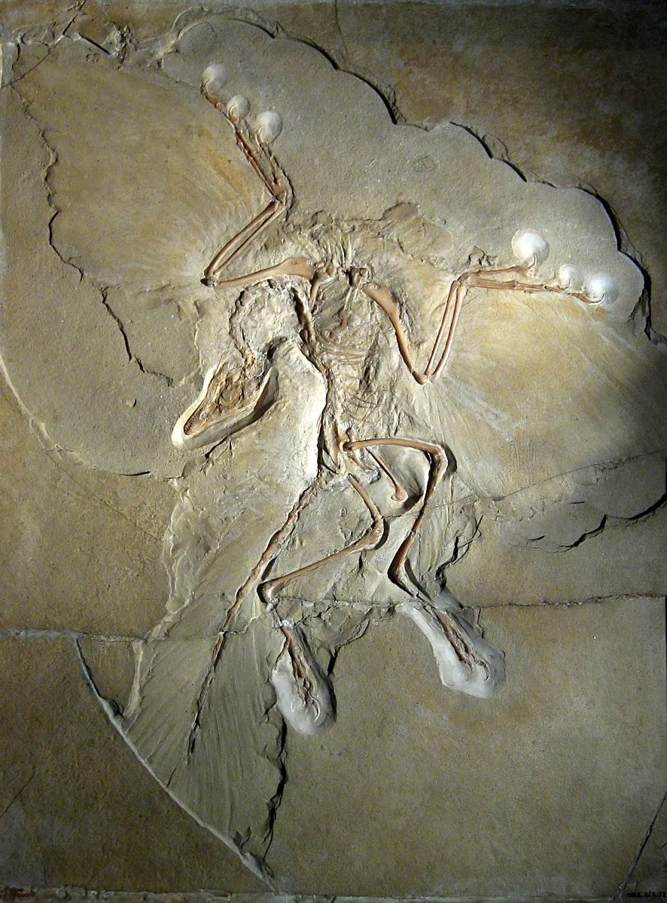
Cretaceous
In the , dinosaurs and other animals diversified, specialized, and dominated further. On land, the biggest change was to flora dominated by , plants with flowers and seeds, which originated in the Cretaceous. By the end of the period they had replaced (evergreen trees) and ferns as the dominant forest plants, and the chapter says many plains had turned to grasslands by the end of the Mesozoic. Bees and ants (haplodiploid eusocial insects) descend from Jurassic wasp-like ancestors that co-evolved with flowering plants. Pangea's breakup shaped biodiversity too: on the isolated island continents animals took strange evolutionary turns, such as the giant titanosaurian sauropod Argentinosaurus and the theropod Giganotosaurus of South America.
The K-Pg (K-T) extinction
Like the Paleozoic, the Mesozoic ended in a mass extinction: the (formerly K-T extinction), 66 million years ago (Figure 8.66). It was likely caused by a large (an extraterrestrial impactor such as an asteroid, meteoroid, or comet) hitting Earth (Figure 8.67). Ninety percent of plankton species, 75% of plant species, and all the dinosaurs died out.

The evidence for an impact:
- . Rare on Earth but more common in meteorites, it is found worldwide in higher concentrations in one rock layer formed at the K-T boundary.
- Impact debris. Melted rock spheres and , which forms only at impact sites, were found at many places around the world.
- After-effects. The impact's strong heat pulse could explain global forest fires, strong acid rain, an abundance of ferns (the first plants to colonize after a fire), debris in the air that cooled temperatures afterward, and a 2-km-high tsunami inferred from deposits from Texas to Alabama.
- The crater. The was confirmed in 1991 from petroleum-company geophysical data (Figure 8.68). About 180 km wide, it is the third-largest confirmed crater on Earth, but it was hard to find because it is partly underwater and partly hidden by the Yucatán forest. Cores from its central peak ring contain granite, showing the impact lifted basement rock from several miles deep toward the surface. In 2010 an international team reviewed 20 years of research and blamed the impact for the extinction.

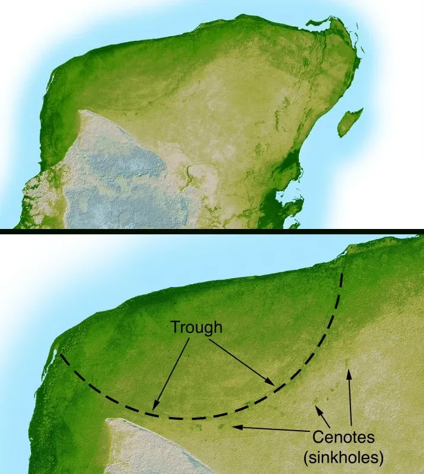
Other events may have helped. Sea level was slowly falling, which is tied to marine extinctions, though comparing gradual and sudden change is hard with an incomplete fossil record. The flood basalts in India, over 1.3 million cubic kilometers of material, were a large hazard to ecosystems and may be partly responsible (Figure 8.69). Some find the impact and the eruptions too much of a coincidence and have linked the two.
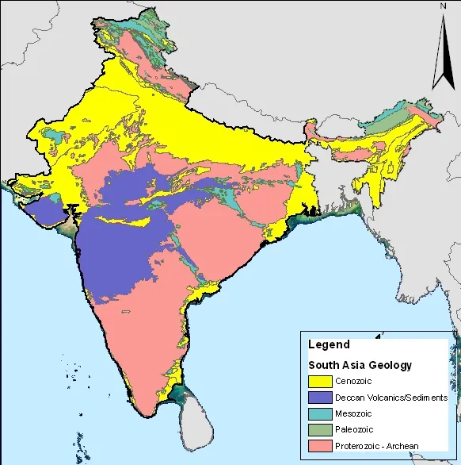
| # | Extinction | Likely cause (chapter) | Hardest hit |
|---|---|---|---|
| 1 | End-Ordovician | Small ice age, sea-level drop | An unusually large number of species |
| 2 | Late Devonian | Not given; timing poorly defined | Reef-building organisms |
| 3 | End-Permian (252 Ma), the largest | Siberian Traps volcanism: greenhouse gases, ocean acidification | Up to 96% of marine species, 70% of land vertebrates; trilobites, sea scorpions |
| 4 | End-Triassic (201 Ma) | Perhaps the Central Atlantic Magmatic Province flood basalt | Some archosaur lineages |
| 5 | End-Cretaceous, K-Pg (66 Ma) | Bolide impact at Chicxulub; possibly Deccan Traps and falling sea level | 90% of plankton species, 75% of plant species, all dinosaurs |
Check yourself: Section 8.7 quiz in the textbook ↗
8.8Phanerozoic Eon: Cenozoic Era
The Cenozoic ("new life") is the age of mammals, when mammals, including human ancestors, became dominant and large (Figure 8.70). Birds also flourished in niches left open by the dinosaurs. Most of the Cenozoic was relatively warm; the main exception is the ice age that began about 2.58 million years ago and, despite recent warming, continues today. In the west, tectonic shifts caused volcanism and eventually changed the long-lived subduction zone into a transform boundary.
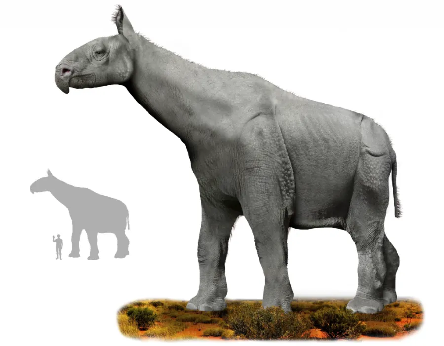
8.8.1 Cenozoic tectonics and paleogeography
In the Cenozoic the plates moved into more familiar positions. The biggest change was the closing of the Tethys Sea through collisions such as the Alps, Zagros, and Himalaya; the Himalayan collision began about 57 million years ago and continues today.
Subduction off the western United States continued from the Mesozoic. After the Sevier orogeny came the in the early Cenozoic. Unlike the Sevier, it was : it involved deeper crustal rocks and raised bulges that became the Rockies, Black Hills, Wind River Range, Uinta Mountains, and San Rafael Swell. The subducting plate was young and close to its spreading center, so it had low density and resisted sinking. Instead of descending into the mantle, it flattened and slid east beneath the continent, building high mountains hundreds of miles inland (Figure 8.71).
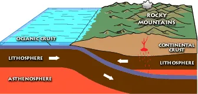
Perhaps the most important Cenozoic tectonic change in North America was California's switch from a convergent boundary (subduction) to a transform boundary (Figure 8.72). Subduction made the Farallon plate converge with the North American plate. On the other side of the mid-ocean ridge, the Pacific plate was moving away from North America. When the subduction zone swallowed the ridge, the Pacific plate touched North America directly, and the relative motion became transform instead of convergent. This became the system (Figure 8.73).

As the San Andreas grew, east-west spread across the western United States, creating the province. Over the last 18 million years the transform switched position, twisting the mountains around Los Angeles, and new faults in the southeastern California deserts may become a future San Andreas-style fault. During the switch, the nearly flat Farallon slab began to sink into the mantle, letting asthenosphere rise around it and causing magmatism: the , one of the most significant periods of volcanism ever. It includes the largest single confirmed eruption, the 5,000 cubic kilometer Fish Canyon Tuff.
8.8.2 Cenozoic evolution
There are five groups of early mammals in the fossil record, identified mainly by fossil teeth, the hardest parts of vertebrate skeletons. The most important here are the Eupantotheres, which split in the Cretaceous into the two main groups of mammals, the (like Sinodelphys) and the or eutherians (like Eomaia), and then diversified in the Cenozoic. Marsupials dominated the isolated island continents of South America and Australia; many in South America died out when placental mammals arrived. Horses started small with four toes and became larger with one toe. Cetaceans (whales and dolphins) began on land as small bear-like mesonychids in the early Cenozoic and gradually moved into the water.
No evolutionary story has been studied more than ours. , the human-like primates, began in eastern Africa several million years ago (Figure 8.74). The steps the chapter describes:
- Jungle to savanna. An environmental change, probably caused by changes in Indian Ocean circulation. evolved before this shift, but bipedal ancestors such as Australopithecus likely had an advantage crossing open ground.
- Life in trees. Growing evidence, including the "Lucy" fossil (Figure 8.75), shows early ancestors lived in trees; moving through a three-dimensional world usually demands high intelligence.
- Endurance running. Humans used running to get resources and possibly to hunt, explaining long legs, strong Achilles tendons, little lower-gut protection, and a wide range of running efficiencies.
- A large brain. Explanations include more meat eating, cooking with fire, tool use, and society itself.
- Out of Africa. Greater brain power let humans spread across the world, entering the Americas over land bridges such as the Bering Land Bridge (Figure 8.76).
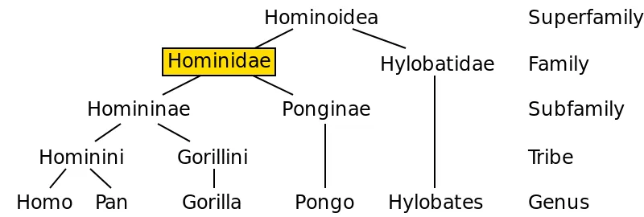

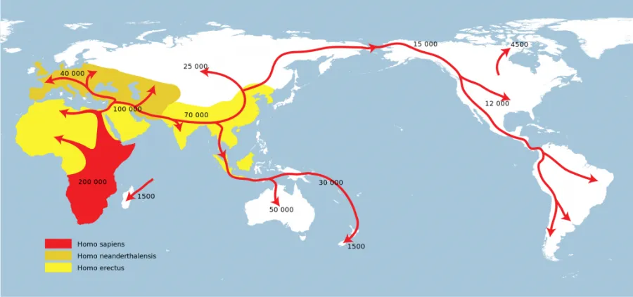
The Anthropocene and extinction
Humans have changed Earth's ecosystems and climate, but they cannot explain every recent change. The , the last and current period of the Cenozoic, began 2.58 million years ago with our current ice age. Ice sheets advanced and retreated, most likely because of (Unit 15). Cold-adapted such as giant sloths, saber-tooth cats, and woolly mammoths appeared, and most died out as Earth warmed after the last glacial maximum (Figure 8.77). Was climate to blame, or humans? Humans certainly caused recent extinctions such as the dodo and passenger pigeon. The oldest and perhaps most widely accepted idea is the : humans hunted large herbivores for food, carnivores then lost their prey, and in many places human arrival is tied to higher extinction rates.

Modern human impact on Earth is unquestioned, and many scientists suggest that human civilization has ended or replaced the epoch and defines a new interval, the (Figure 8.78). The evidence is summarized in Table 8.12. The biggest debate is when it starts: with agriculture, about 12,000 years ago, which would show in the strata, or with the industrial revolution and the carbon dioxide it added to the atmosphere. Either way, future geologists, even alien ones, would easily recognize human impact as the start of a new geologic interval.
| Evidence | What it is |
|---|---|
| Extinctions | Species lost to human activity |
| Tritium | Increased tritium (hydrogen with two neutrons) from nuclear testing |
| Pollutants | Rising pollutants such as carbon dioxide |
| New minerals | More than 200 mineral species never seen before, found only in this epoch |
| Future "fossils" | Long-lasting materials such as plastics and metals |
| Moved earth | Large amounts of rock and soil moved by people |

Check yourself: Section 8.8 quiz in the textbook ↗
Summary
Earth has changed enormously since it formed: the atmosphere filled with oxygen, life forms came and went, supercontinents assembled and broke apart, and more life forms have gone extinct than exist today. A general picture of these changes puts present-day change into perspective.
Quick recap
- Big bang 13.8 billion years ago; evidence: spectroscopy, redshift (Hubble), cosmic microwave background. Stars fuse H → He → … → Fe, Ni; supernovae make elements up to uranium.
- Nebular hypothesis: rocky planets inside the snow line, gas and ice giants outside; Jupiter made the asteroid belt.
- Hadean (4.5–4.0 Ga): molten Earth, differentiation into crust, mantle, core; giant-impact Moon; water from outgassing, comets, meteorites.
- Archean (4.0–2.5 Ga): late heavy bombardment (4.1–3.8 Ga); cratons (shield + platform); stromatolites 3.5 Ga.
- Proterozoic (2.5 Ga–541 Ma): GOE, banded-iron formations, Huronian glaciation; Rodinia; eukaryotes, sexual reproduction, Ediacaran fauna.
- Paleozoic (541–252 Ma): Cambrian Explosion, jaws, land plants, tetrapods, amniote egg, synapsids; Pangea; ends with the Permian extinction (Siberian Traps).
- Mesozoic (252–66 Ma): Pangea breaks up, Atlantic opens; Nevadan and Sevier orogenies, Interior Seaway; dinosaurs, pterosaurs, birds, mammals, flowering plants; ends with the K-Pg impact.
- Cenozoic (66 Ma–now): Tethys closes (Himalaya), Laramide, San Andreas and Basin and Range; mammals diversify, hominids; Quaternary ice age; Anthropocene proposed.
Check yourself: Chapter 8 review quiz in the textbook ↗
Resources
Fact-check notes
Every statement in this guide was checked against the textbook chapter. Where the chapter differs from current references or from itself, the guide says so here, so you know what the textbook says.
| Topic | Chapter says | Note |
|---|---|---|
| Hydrogen 74% | Hydrogen makes up "about 74% of all matter in the universe" | About 74% of the mass of ordinary (atomic) matter. Most matter in the universe is dark matter, which is not made of elements (NASA WMAP/Planck results). The guide keeps the chapter's figure. |
| Big-bang elements | Big bang made hydrogen, helium, lithium, and beryllium | Big-bang nucleosynthesis made hydrogen, helium, and traces of lithium; any beryllium-7 decayed to lithium. The guide keeps the chapter's list. |
| Gaps in sunlight | Gaps match elements "present in the Earth's atmosphere" | Most Fraunhofer lines come from elements in the Sun's own outer atmosphere; only a few come from Earth's air. The guide says "elements in the gases the light passes through." |
| Ice giants | Uranus and Neptune are "mostly methane ices" | Their interiors are mostly water, ammonia, and methane ices (NASA solar system pages). The guide keeps the chapter's wording. |
| Planet definition | Three criteria: round, not massive enough for fusion, cleared orbit | The IAU 2006 definition is: orbits the Sun, round from its own gravity, has cleared its orbit (IAU Resolution B5). "No fusion" is not one of them. The guide labels the table "the chapter's three criteria." |
| Late heavy bombardment | A second spike of impacts 4.1–3.8 Ga is presented as established | Re-analysis of lunar samples has questioned whether there was a spike at all (Boehnke & Harrison, 2016, PNAS 113). The guide keeps the chapter's account. |
| Huronian glaciation | Around 2.1 billion years ago | Usually dated about 2.4–2.1 billion years ago. The guide keeps 2.1. |
| Kalahari craton | "the Kalahari craton of eastern Africa" | The Kalahari craton is in southern Africa. The guide says "of Africa." |
| Tiktaalik | Appeared about 385 million years ago | The fossils are about 375 million years old (Daeschler, Shubin & Jenkins, 2006, Nature 440). The guide keeps the chapter's 385. |
| Arthropleura | "2.5 meters (6.4 feet) long" | 2.5 m is about 8.2 feet. The guide gives only the metric value. |
| Repeated paragraph | "Life bounced back during the Silurian period" appears twice | The guide merges them into one Silurian paragraph. |
| Grasslands | Angiosperms switched "many plains to grasslands by the end of the Mesozoic" | Grasses existed by the Late Cretaceous, but grasslands spread widely in the Cenozoic (Strömberg, 2011, Annual Review of Earth and Planetary Sciences 39). The guide says "the chapter says." |
| Shocked quartz | "a special type of 'shocked' quartz called stishovite" | Shocked quartz is quartz with planar deformation features; stishovite is a separate high-pressure SiO₂ mineral, also found at impact sites (Unit 6). The guide says "shocked quartz." |
| Chicxulub cores | The impact lifted "basement sediment" (granite) | Granite is crystalline basement rock, not sediment. The guide says "basement rock." |
| Ice age start | 2.558 million years ago (8.8 intro) and 2.58 million years ago (Anthropocene) | The ICS chart gives 2.58 Ma for the Quaternary. The guide uses 2.58 in both places. |
| Hominids | "Hominids, the name for human-like primates" | Today the family Hominidae (hominids) includes all great apes, as the chapter's own tree shows; the human lineage is called hominins. The guide keeps the chapter's usage and the key term notes it. |
| Spelling | "Agustasaurus," "Archeopteryx," "Pachycephhlosaurus," "Hominadae" | Correct spellings are Augustasaurus, Archaeopteryx, Pachycephalosaurus, Hominidae. |
| Figure numbers | Chapter figures are unnumbered | This guide numbers its own figures and tables in order, so they do not match any other edition. |
Credits
Content summarized from An Introduction to Geology, Chapter 8, © 2017 Chris Johnson, Matthew D. Affolter, Paul Inkenbrandt, and Cam Mosher, licensed CC BY-NC-SA 4.0. Every photo and drawing taken from the chapter is credited in its caption, with the license given in the chapter's media attributions.
- Drawn for this guide from the chapter's descriptions: the time bar (Figure 8.1), redshift (Figure 8.7), protoplanetary disk and snow line (Figure 8.16), differentiation (Figure 8.21), craton cross-section (Figure 8.31), oxygenation chain (Figure 8.37), and the San Andreas transform (Figure 8.72).
- Outside sources are named where they are used, in captions and in the fact-check notes.